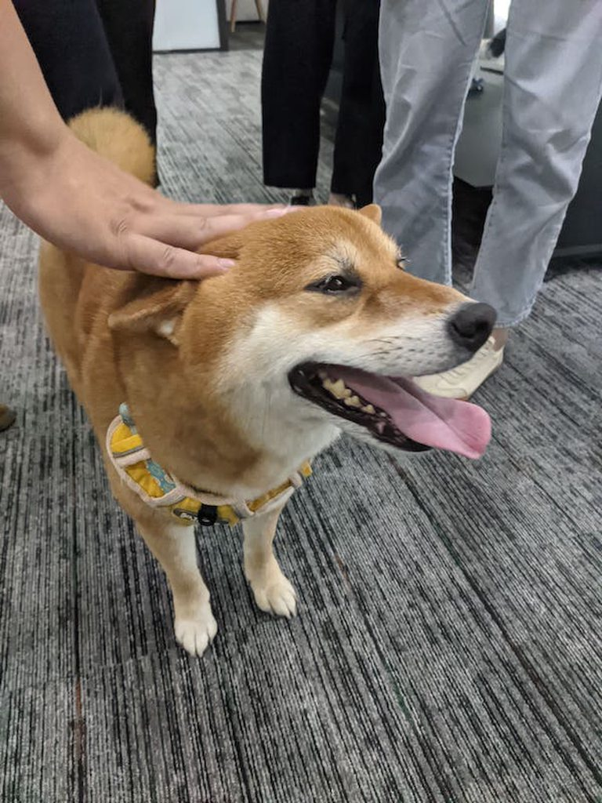
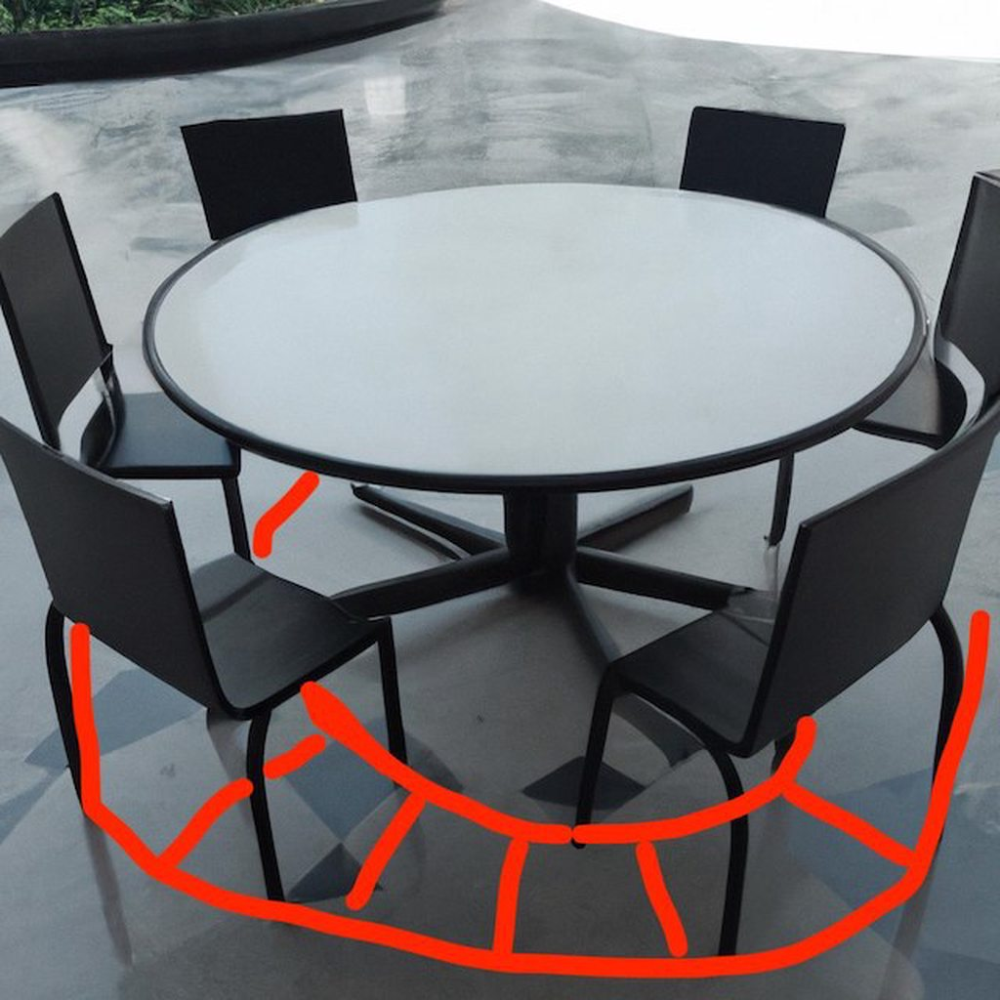

这是旧文新发
今天的话题来自网友： 从小到大他都很厌恶出去见亲友，因为一进门妈妈就会叫他把在场的所有人叫一个遍，临走再再叫一遍 “xx再见”，每次聚会，他妈妈都会极力讨好别人，对自己却只有说教，经常以对比别人家孩子的方式点评自己，感觉自己只是一个讨好别人的工具，觉得自己妈妈拿自己强行制造话题。毕业工作了，妈妈一点没变，在和亲戚聚会的时候一直对自己催婚，导致自己一点不想回家，她就在外面和人说自己忘了老本，不孝顺。他很苦恼，不知道怎么办
称谓
我也非常讨厌出门见亲友和乡民，我经常会想起那些遥远的下午，我的父母没有带我去见识冰块和奇装异服的吉普赛人，而是带着我在村子里窜来窜去。村子不大，但是有各式各样的人：有饱经田地耕作之苦，满脸沟壑纵横的人，正如蜀国著名画家罗中立的《父亲》所描绘的那样；有老奸巨猾，将脖子伸得像鹅一样长，竖起耳朵仔细听辩你的话语中是否不经意透露出有趣的秘密的人；也有一辈子小心翼翼地活着，连和你对话也感到腼腆和局促的农村妇女。和他们一见面，父母首先就会向我宣读对方的辈份和我应当对其的称呼，我则会机械地复述一遍那个称呼，这根本就不能称为一场交谈，因为我根本就没有正视他们的面容和双眼，我就像宇宙中的一颗星星一样，只是向着漆黑的周围世界发出一个固定频率的电磁波。那时候的我太年轻，脑子里空空如也，而对方早已在改造地球的伟大工程中变得麻木不仁，所以我们之间并没有什么想要交谈的内容，他只是随口应答我的言语，说一句：“你吃饭了吗”， 这让我倍感疑惑，我们那个小山村里没有日料、法餐，更没有米其林，我仔细确认了他家的烟囱也没有冒烟，完全不像是要请我吃饭的样子，所以为了不让对话变得尴尬，我只好用一个没有时间状语的句子回答吃过了，这自然是一句废话，我如果没吃过饭，我不可能活那么多年。
工作后的某一天，同事带着他的爱犬到公司上班，我蹲在狗的面前，摸着它的头却不知道应该对它说些什么，这时候同事对他的狗说：“旺财，蹲下跟他握手”，旺财没有蹲下也没有跟我握手，人群中发出一阵阵哄笑，这让我想起了多年前那些面对陌生老农的瞬间。

父母在他人面前要求我如何称呼这些人，实际上是在宣示对我的主权，我听话地照做便是让这样的权力关系得到公开的认证与显现。而如果我对那个人说：“小逼崽子，今天我不想说话”，那便是大逆不道十恶不赦了，必定会臭名远扬。而这些等待着我主动向他们打招呼的人，也是在等待着我的服从，来和他们达成一个上下级的社会结构。在赛里斯农村，对他人的称呼需要讲究辈份，我会依据辈份称呼一个没有血缘关系的男人为叔叔或者爷爷，这是宗族社会留下来的痕迹，大家一般都入乡随俗遵守这种祖宗定下来的社会结构来行事。但是凡事总有意外，有些年过半百的人，按照辈份需要称呼我为爷爷，这时候他们就会说：“我的年纪这么大了，你叫我声哥哥就得了”，年幼的我总觉得不公平，既然我辈份高过他，看他年龄大，我自愿降低辈份到和他同辈，那我为什么不能叫他一声弟弟呢？这里的关键就是叫他弟弟，会让他在社会结构中处于我之下，这是他不能忍受的，所以我认为毛润之是赛里斯最伟大的人，他早就看透了这些规矩，所以他曾经说过：“规矩是用来约束敌人的，而不是束缚我们自己手脚的”。
酒桌
酒桌是赛里斯人引以为傲的社交文化，美国人最伟大的公司是苹果，而赛里斯最伟大的公司却是一个生产白酒的茅台，可见酒桌在赛里斯生活中就如同皇冠上的明珠一般璀璨夺目。在赛里斯的酒桌上，倒酒几分满、酒杯互相撞击时候的高度差、宾客的座位次序都有严格的规矩。当赛里斯人变得越来越有钱，吃饭坐上了碰杯很困难的大桌子的时候，他们甚至还发明了利用“超距作用”完成碰杯的方法：双方使用酒杯敲击桌面，利用固体传递振动波来完成酒杯跨越空间的碰撞。
在古代赛里斯人大多数只有方形的桌子可以使用，所以就规定坐北朝南的地方为上位，只有重要的人物才能入坐，但是在进入现代社会后，赛里斯人住进了房产开发商修建的奇形怪状朝向不正的房子，这个坐北朝南实际上已经失效了，但是原则上来讲靠近屏风的位置依然是上位。我忽然想到一个足以让赛里斯人不用喝酒就能晕头转向的足够申请国家专利的餐桌设计：在椅子下面安装圆形轨道，然后使用电机驱动匀速旋转，这样就能够让赛里斯人不再纠结哪个位置是上位，同时可以很方便地夹到桌子上所有的菜，简直是一举两得。

如果用数学的语言来描述赛里斯的酒桌，用偏序集合来表示简直是再恰当不过了：
偏序集合（英語：Partially ordered set，简写Poset）是数学中，特别是序理论中，指配备了偏序关系的集合。 这个理论将对集合的元素进行排序、顺序或排列等直觉概念抽象化。 这种排序不必是全部的，就是说不需要保证此集合内的所有对象的相互可比较性。
酒桌上所有人组成一个集合，每一次一对一的敬酒则会在两个人之间形成一个上下关系，主动敬酒的人对接受敬酒的人表达服从，由于有桌子上一整圈的观众围观，这个上下级关系同时也得到了公开的认证。而一对多的敬酒则往往相反，主动敬酒并且开启长篇大论的人，则是在宣示：“我是你们的爹”。在一次又一次的酒局中，整个社会形成了一个巨大的偏序集合，这种氛围令我厌烦，而在偏序集合中，并不是任意两个元素都存在偏序关系，所以我很少请客吃饭或者接受别人的邀请去吃饭，不是 AA 制的局我几乎不参加，不去完成这样的偏序关系认证仪式，可以让自己一定程度和这个巨大的结构保持距离。
节日问候
赛里斯虽然声称有五千年的历史，但是这些历史中有两千多年不可考证，有数百年分裂混战，有数百年异族入主，还有近代的社会结构和文化的数次暴力改变，所以赛里斯的文化实际上有很多断层现象，真正流传下来的并不多。最近这些年这个民族时常绞尽脑汁想挖出一些自己历史悠久的符号，例如山东曹县不久之前刚发明的化学纤维汉服的流行则体现了这样的期盼。而赛里斯的节日也是一样，两大长假节日劳动节和国庆节都是舶来品，端午、中秋、春节是祖宗流传下来的，但是实际上它们的含义早已被忘得一干二净。所以在赛里斯我总觉得过节是一个特别无聊的事情，我时常不知道自己为什么要过节，也不知道我为什么要给其他人发一句虚情假意毫无用处的节日问候，赛里斯的节日这么无趣，不可能因为我的一句群发的“xx节快乐”就变得充满趣味。
对赛里斯人来讲，不管过什么节，节日问候是必不可少的经典节目。这个抽象的问候，在端午节是炒作成天价的粽子礼盒，在中秋是月饼礼盒，在春节是拜年活动。这些礼盒里面装的都是一些黑厂制作的垃圾食品，但是赛里斯人依旧热衷于送来送去，是因为每一次送礼都是一次人与人之间等级关系的宣告与强化。
结语
参与这些活动则是社会已经对你完成规训的标志，代表你已经成功融入这个复杂的社会结构内。而当前的我则是一个悠闲自在的局外人，我们如何与这个世界相处，我认为一切的精妙都藏在那个经典的句子里：“今天，我妈妈死了，可能是昨天，我不知道”。